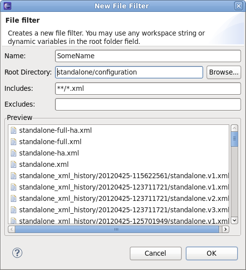
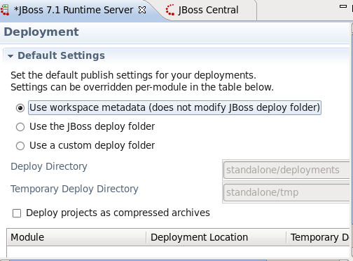

Server
Server locations with space now work properly!
Servers that live in directories with spaces have long been a problem issue in the past, but now, rest assured that your servers will be well taken care of! Starting and stopping these servers should now work flawlessly, and with the correct arguments no doubt!! Various other server argument bugs were fixed as well, helping to make JBossTools as strong as our word! You're in good hands, with JBoss Tools!
Primary Jira Related Jiras: JBIDE-11824, JBIDE-12041, JBIDE-11853
JBoss AS7 can now expose your management port for local and remote instances!
With the addition of a new checkbox in the server editor, users can now expose their management port when starting and stopping remote (or local!) instances of the server. This ensures that management commands, such as starting and stopping the deployment scanner, or polling the server, work.
But be careful! If your server is on production somewhere, it might be unwise to leave that much awesome power available to any computer with a jboss installation and an internet connection! Ask your system administrator for guidance. And never forget, the infinite is unknown at JBossTools!

AS7 JMX Connections strengthened!
As mentioned over in JMX Tools, support for AS 7's JMX connectivity has moved forward a lot, allowing for faster and smoother usage. With everything from minimizing the number of connections, cleaning up stalled threads, and erroring in a more graceful fashion, it's almost as if JBossTools and AS 7's JMX support were made for each other! With JBossTools, if you're going, we'll fly you there! And how!!
Related Jiras: JBIDE-11483, JBIDE-11482, JBIDE-11481, JBIDE-11064, JBIDE-11872
Lend me your EAR, and make it Runnable!!
Take any EAR project, right-click it, run it on your server, and watch a browser open. Why is this so cool? Because webtools doesn't have it! That's right. Webtools can find some way to run all their projects on your server, except for EAR projects that is! Well not any more. The new behaviour in JBoss Tools is to select the first Web project in your EAR and run that one instead. The full module will get published, of course, but at least now a browser will show up with something!
In a related issue, right-clicking a .java file to run on your server seems to have always come up with a bit of a strange choice for a web url. It'd actually open a URL like yourwar.war/web-inf/classes/ReallyCoolThing.java. No matter how cool that thing really is, I don't think that's a URL we want loaded. Do you?
So everybody, close the door, code your web store, and everybody dance the dinosaur! You've lent me your ear, and this is your reward!
Server Editor's module restart pattern revised, and FIXED!!
You may remember the introduction of this feature in beta3, but what you might not have noticed was that a workspace restart was required if you ever intended to CHANGE that value. Talk about a sticky property! Ugh! A healthy dose of bug-be-gone has left this particular issue dead, but not forgotten.... well, at least not by some. You guys can forget it if you want. As Audrey Hepburn once said, Happiness is health, and a short memory!

New fileset for your AS 7? Now with sensible defaults!
If you've tried to open your servers view and right-click the "filesets" category, with the intention of adding a new fileset, you may have noticed that AS 7's defaults were a little... outdated. Default folders that only make sense for AS 6 and below are soOoOOoo beta2. It's a bit like seeing someone wear bellbottoms... it doesn't ruin your day, but it does make you feel just a little more sad about where the world is heading. Either way, JBoss Tools 3.3.0 CR1 replaces those old rags with new sensible defaults. I can't promise they'll make you smile, but, lets all be honest with ourselves... they will ;) JBoss Tools Rules!!!

No IPs, no problem! IPv6 support verified!
According to our devs and our QE teams, IPv6 support for JBoss Tools is online and fully operational. Loading local AS 7 servers with a hostname of "::1" will no longer result in a stuck process and an unresponsive and recalcitrant server refusing repeated requests to shut down already! Browser support in eclipse is also present, so Run-on-server actions should yield the expected result. It's times like this you know JBoss Tools was the right choice, at the right time, and for the right reasons.
Stop polluting my deployments folder!
Back during older versions of JBoss AS, all deployments went into a deploy folder. This included deployments JBoss itself provided. Well, users didn't like having to dig through this mess to remember which deployments were theirs and which weren't. They demanded the ability to segregate their deployments out, and we gave it to them!
While this isn't so much an issue now as it was then, there are still a significant number of users, especially in dev mode, who prefer to keep their deployments somewhere other than the app server's standard deployments folder. Well, Beta3 and CR1 have both enhanced this support for JBoss AS 7 in a variety of ways. First, all three standard deployment options are now enabled (server, metadata, and custom), as they are for previous versions. And second, the running server will receive the list of folders that need to be added (or removed) from the server's deployment scanners.
No more will users have to suffer through widely differing levels of functionality depending on their app server version. The infinite is unknown at JBoss Tools.

In a related issue, some early adopters were confused when a scanner they had added had a 0-second interval, which basically meant inactive. We've added a popup dialog to alert the user in this case. If your server has inactive scanners, you'll be provided a chance to change it, or ignore that dialog forever.

Which args do I modify again?
Some users who were running remote servers based on RSE were getting confused how, exactly, to change their launch and stop arguments. By opening the server view, and double-clicking your server, the server editor opens. If you then click "Open Launch Configuration", you have a huge array of options available, but, perhaps, too many options.
To help clear up the confusion, if you're running an RSE server, opening the launch configuration will now ONLY show you the remote launch args tab. If you're running a local server, however, all options (minus the RSE tab) will show.
A small step every day, with JBoss Tools leading the way!

Default classpaths per server made more user friendly
A while ago, users were asking for ways to customize their project classpaths on a per-server basis. While developing it, we figured that most users wouldn't want to customize each and every server they make. If they happened to make 2 or 3 servers with different launch args, for example, it would be tedious to try to update the classpath for each one manually.
Instead we went with the ability to customize it on a per server-type basis, or, to add some jars to a global list for all server types. This is accessible through window -> preferences -> server -> runtime environment -> Default Classpaths. Well, somehow during the dev cycle, a lot of this proved to not work in all cases. It also was shown to need a real cleanup to make it more user friendly. The area most confusing to users was Adding a new fileset. And so we cleaned that up, added better defaults, and removed fields that just didn't belong!
Remember, for all your development environment needs, JBoss Tools is NEVER gonna give you up!!!